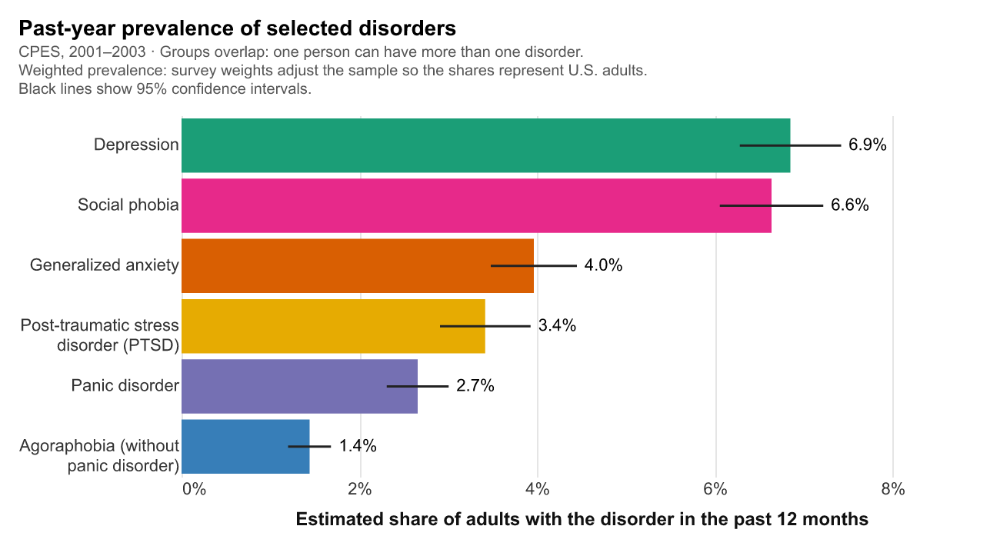
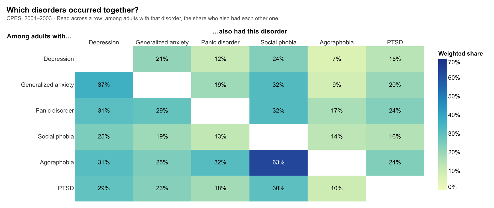
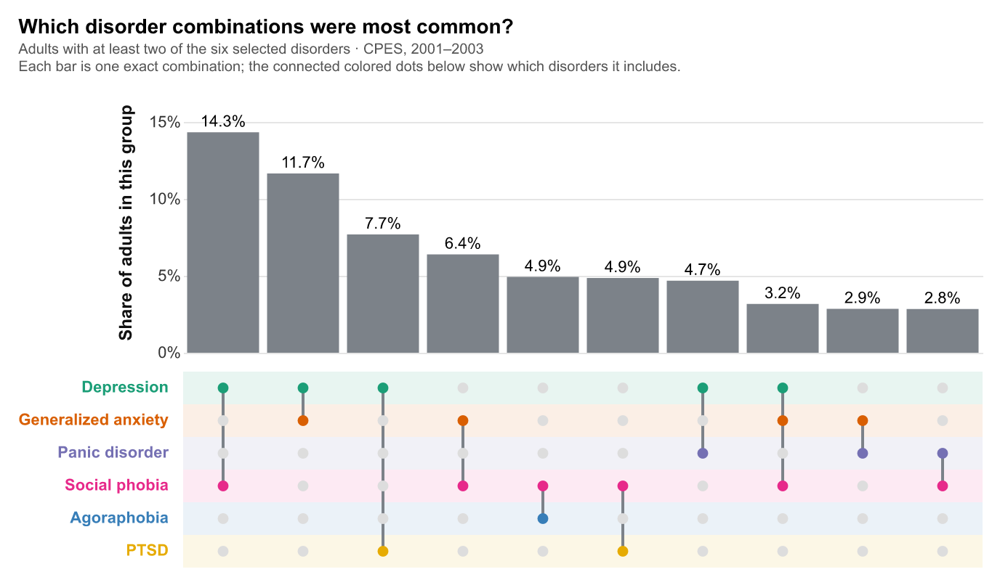
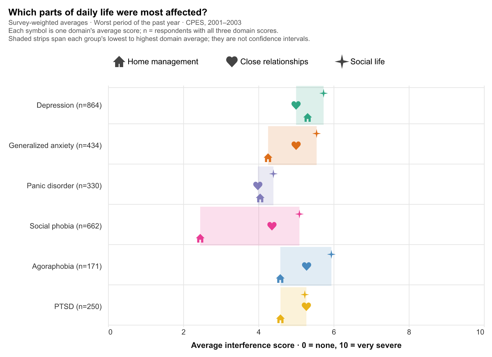
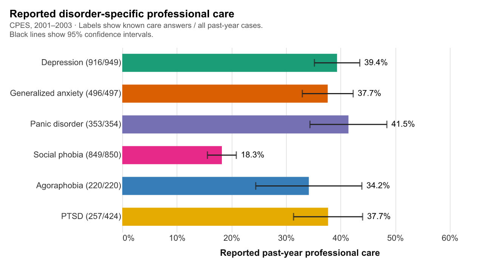
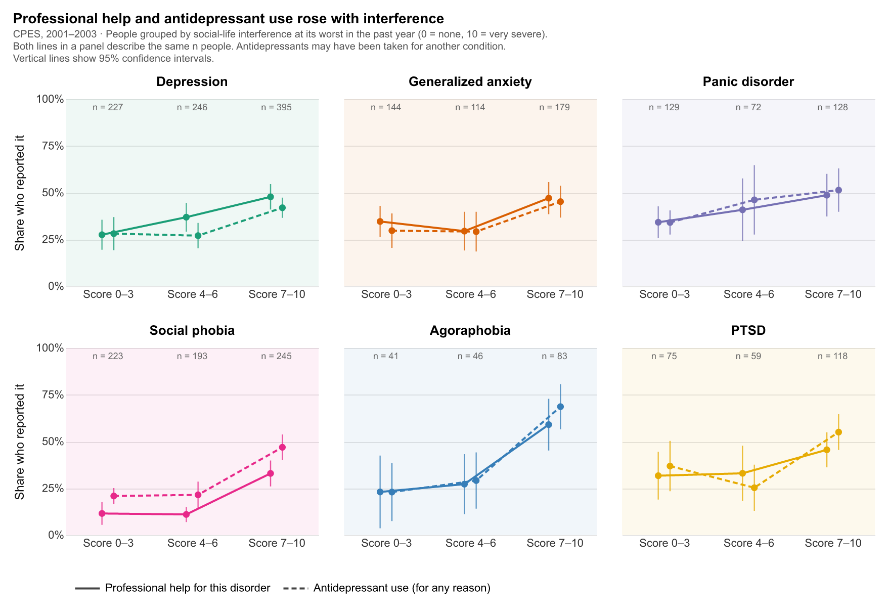
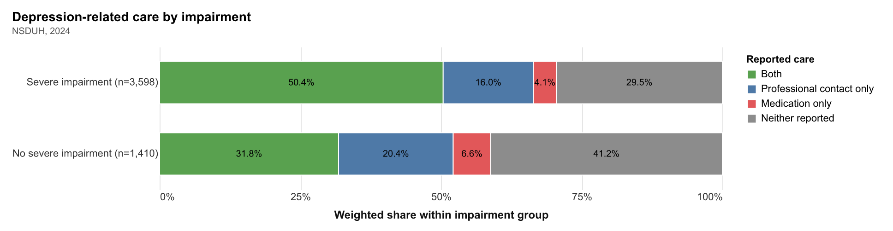
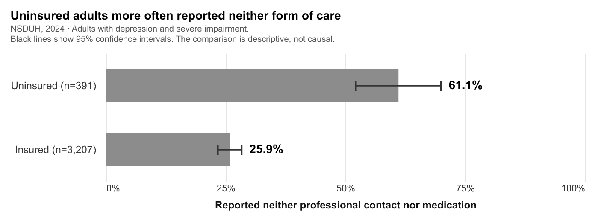

Struggling, but Untreated
How often adults with common mental disorders went without care
Depression and anxiety disorders are common, and they rarely stay contained. They shape how people manage a home, keep close relationships, and take part in social life. Yet having a disorder, even one that badly disrupts daily life, does not mean getting help for it.
This article follows that gap. Using a national survey of more than 10,000 adults from 2001–2003, it first shows how common six disorders were and how often they overlapped, then how much they interfered with daily life, and finally how many people reported care. A last section turns to 2024 data on depression to ask whether the gap has closed. It has not.
Common, and rarely alone
About 7% of adults had depression in the past year, and almost as many had social phobia (6.6%). The other four disorders were less common, from 4.0% for generalized anxiety to 1.4% for agoraphobia. Social phobia, often overlooked next to depression, affected about as many people: their confidence intervals overlap.

These groups overlap heavily. Among adults with agoraphobia, 63% also had social phobia. More than a third of adults with generalized anxiety also had depression (37%), and about three in ten adults with panic disorder or PTSD also had social phobia.

Looking at exact combinations makes the pattern clearer. Among the 754 respondents with at least two of the six disorders, the most common pairing was depression with social phobia (14.3%), followed by depression with generalized anxiety (11.7%) and depression with PTSD (7.7%). Depression appears in five of the ten most common combinations, and social phobia in six. Many people were carrying more than one condition at once.

What these disorders do to daily life
The survey asked how much each disorder interfered with home management, close relationships, and social life. For five of the six disorders, social life was the most affected of the three. The gap was widest for social phobia: an average of 5.1 for social life, but only 2.5 for home management. For PTSD, close relationships (5.3) edged out social life (5.2).

Averages around 4 to 6 can make interference look moderate. The full distribution of social-life scores shows otherwise. In every group, people used the whole scale, from 0 to 10, and between a third and a half rated their interference 7 or higher: 34% for panic disorder, 46% for depression, and 50% for agoraphobia. For many people, these disorders were not a mild inconvenience.

Who got help
Despite this, most people did not report professional care for their disorder in the past year. For five disorders, between 34% and 42% did. Social phobia stands out again: only 18% reported professional care, less than half the rate for depression (39%), even though the two were about equally common.

Care was more common when interference was worse. In every disorder, the share reporting professional help was higher among people scoring 7–10 than among those scoring 0–3. But even in that highest group, only 33% to 59% reported professional help for their disorder. For social phobia, professional help rose from 12% to 33%, while antidepressant use, which may have been for another condition, reached 47%. Antidepressant use is the one medication question asked of everyone, so it gives a broader view of treatment alongside disorder-specific help.

Twenty years later
The survey above is more than twenty years old. The 2024 National Survey on Drug Use and Health asks about depression, impairment, and care together, so it offers a recent look at the largest of these groups.
Among adults with past-year depression and severe impairment in daily roles, half reported both professional contact and prescription medication (50.4%). But 29.5% reported neither. Among those without severe impairment, 41.2% reported neither.

The gap was much wider for adults without health insurance. Among adults with depression and severe impairment, 61.1% of the uninsured reported neither form of care, compared with 25.9% of the insured. This comparison describes two groups; it does not show that insurance caused the difference, since uninsured adults may differ in other ways too.

Putting impairment, insurance, and care together shows how the groups connect. Most adults with depression had severe impairment (68.6%) and insurance (89.5%), and two-thirds reported some form of care (66.8%). The uninsured band is narrow, but most of it flows toward "neither reported": 65.8% of uninsured adults with depression reported no care, compared with 29.3% of insured adults.

Conclusion
Across six common disorders, many people lived with serious disruption to their daily lives, especially their social lives, and most did not report professional care for it. Social phobia shows the gap most clearly: about as common as depression, frequently paired with other disorders, and the least likely to be treated. More severe interference was linked to more care, but even at the highest scores, many people did not report professional help. Two decades later, about one in three adults with depression still reported neither professional contact nor medication, and the share was much higher among the uninsured.
These are descriptive results from surveys, and the two surveys use different questions, so they cannot be compared directly. They do point to the same pattern: the people who are struggling are not always the people who get help.
About the data
Figures 1–7 use the Collaborative Psychiatric Epidemiology Surveys (CPES), restricted to the 10,341 respondents in the NCS-R Part 2 and NLAAS samples. Figures 8–10 use the 2024 National Survey on Drug Use and Health (NSDUH), focusing on 5,008 adults with past-year depression and known answers about care. All percentages and averages use survey weights; confidence intervals account for the survey design. Questions about PTSD care and interference were asked of a smaller, event-specific group, so the PTSD care estimate uses 257 of 424 cases. Medication questions do not say which condition a medication was for.
Data sources
- Alegría, Margarita, James S. Jackson, Ronald C. Kessler, and David Takeuchi. Collaborative Psychiatric Epidemiology Surveys (CPES), 2001–2003 [United States]. ICPSR 20240, version 9. Inter-university Consortium for Political and Social Research. https://www.icpsr.umich.edu/web/ICPSR/studies/20240
- Substance Abuse and Mental Health Services Administration. National Survey on Drug Use and Health 2024 (NSDUH-2024-DS0001), public-use file. https://www.samhsa.gov/data/data-we-collect/nsduh-national-survey-drug-use-and-health/datafiles/2024